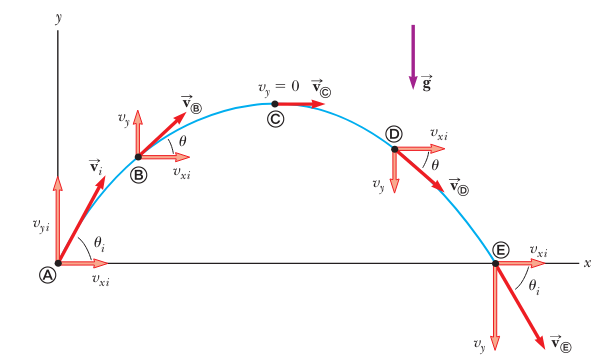
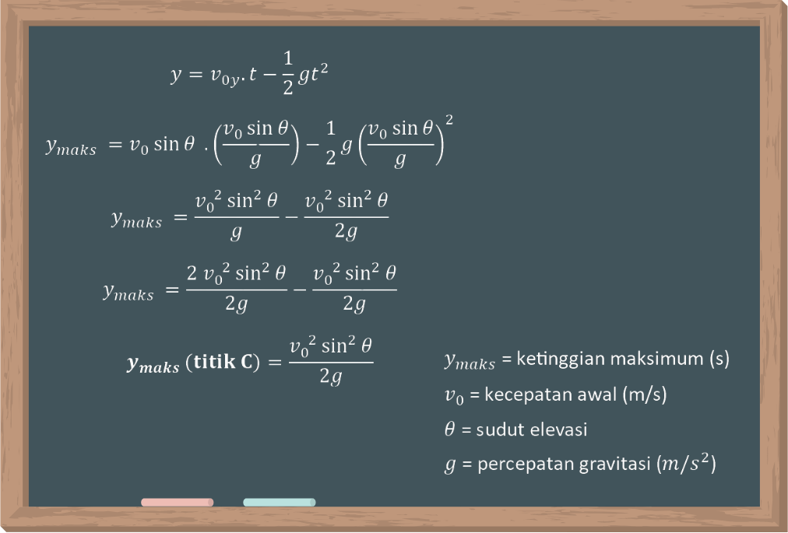
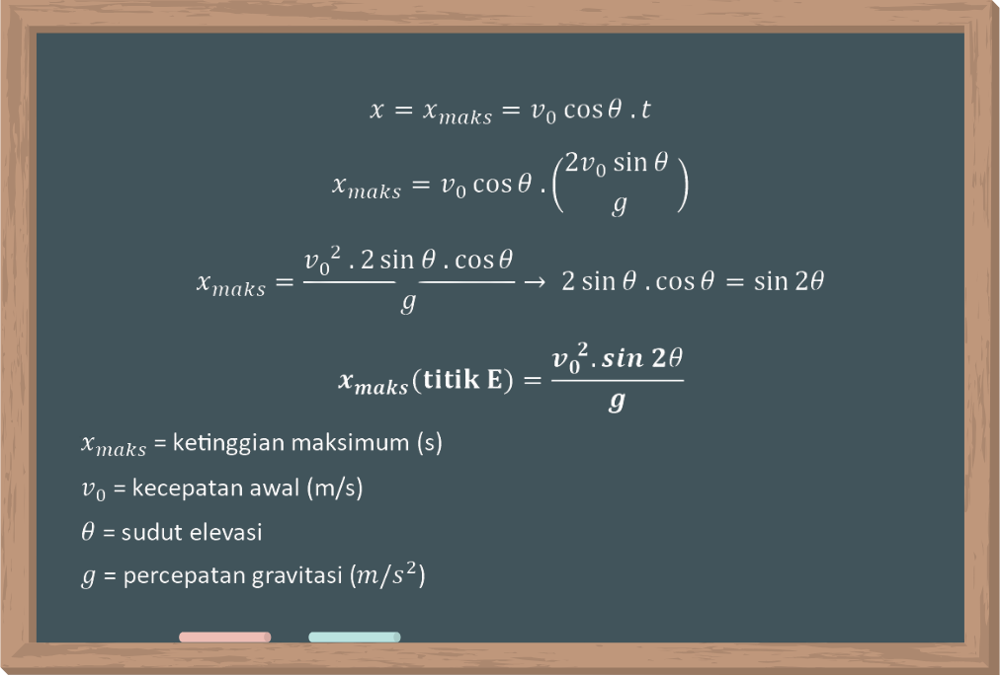

Pada kegiatan pembelajaran sebelumnya, kita sudah mempelajari pengertian, ciri, dan besaran gerak parabola. Selanjutnya, pada kegiatan pembelajaran ini kita akan mempelajari ketinggian maksimum dan jarak maksimum pada gerak parabola. sebelum membahas lebih lanjut, yuk simak video berikut ini.
Bagaimana pengaruh kecepatan awal terhadap ketinggian maksimum dan jarak maksimum yang ditempuh benda? Bagaimana pengaruh sudut elevasi terhadap ketinggian maksimum dan jarak maksimum yang ditempuh benda? Tuliskan hipotesis kamu dengan mengisi bagian yang kosong berikut ini.
Pada peristiwa gerak parabola, semakin kecepatan awal benda yang bergerak maka akan semakin ketinggian maksimum yang dicapai benda.
Pada peristiwa gerak parabola, semakin kecepatan awal benda yang bergerak maka akan semakin jarak terjauh yang dicapai benda.
Pada sudut 0° - 45° semakin besar sudut elevasi maka jarak tempuh yang dicapai benda akan semakin dan pada sudut 46° - 90° semakin besar sudut elevasi maka jarak tempuh benda akan semakin dalam peristiwa gerak parabola.
Pada peristiwa gerak parabola, semakin besar sudut elevasi maka ketinggian yang dicapai benda akan semakin .
Untuk membuktikan benar atau tidak hipotesis kamu, ayo lakukan percobaan sederhana menggunakan lab virtual berikut ini. Ikuti langkah-langkah secara berurutan ya.
| Kecepatan awal (m/s) | Sudut (°) | Jarak Maksimum (m) | Tinggi Maksimum (m) |
|---|---|---|---|
Setelah melakukan percobaan, kamu akan mendapatkan data seperti contoh berikut ini.
| Kecepatan awal (m/s) | Sudut (°) | Jarak Maksimum (m) | Tinggi Maksimum (m) |
|---|---|---|---|
| 8 | 45 | 6.4 | 1.6 |
| 10 | 45 | 10 | 2.5 |
| 14 | 45 | 19.6 | 4.9 |
| 16 | 45 | 25.6 | 6.4 |
| 16 | 30 | 22.17 | 3.2 |
| 16 | 37 | 24.61 | 4.64 |
| 16 | 45 | 25.6 | 6.4 |
| 16 | 53 | 24.61 | 8.16 |
| 16 | 30 | 22.17 | 9.6 |
Apakah hipotesis yang kamu buat benar?
Dari tabel hasil percobaan di atas, disimpulkan bahwa semakin besar kecepatan awal benda yang bergerak secara parabola maka semakin besar ketinggian maksimum yang dicapai benda. Dan semakin besar kecepatan awal benda yang bergerak secara parabola maka akan semakin jauh jarak maksimum yang dapat ditempuh benda.
Dapat kita lihat dari tabel bahwa pada sudut 0° - 45° semakin besar sudut, semakin jauh jarak yang dapat ditempuh benda. Pada sudut 46° - 90° semakin besar sudut, semakin kecil jarak yang dapat ditempuh benda.
Dapat kita lihat pula bahwa semakin besar sudut elevasi, semakin jauh titik tertinggi yang dapat dicapai benda.
Mengapa demikian? Mari kita pelajari pembahasan berikut ini.
Perhatikan kembali gambar proyeksi gerak parabola pada koordinat kartesius berikut.
 Gambar 2.1 Lintasan dan vektor pada gerak parabola Sumber gambar : Raymond. A. Serway, 2017Sebuah benda yang bergerak secara parabola dari 0 titik asalnya (titik A) saat t=0 melewati tinggi maksimum yang dicapainya (titik C) kemudian lanjut bergerak hingga mencapai jarak terjauh yang dapat ditempuh (titik E).
Untuk menentukan ketinggian maksimum benda dan jarak terjauhnya, kita perlu mengetahui terlebih dahulu waktu tempuh ketinggian maksimum dan waktu tempuh jarak terjauhnya.
INGAT!!! Pada saat benda mencapai ketinggian maksimum (titik C), kecepatan benda tersebut pada arah sumbu-y adalah nol (vy=0) sehingga,
Dengan waktu maksimum merupakan waktu untuk benda tersebut mencapai ketinggian maksimum yang telah dicapainya. Dengan menggunakan persamaan waktu maksimum tersebut, kita dapat menentukan ketinggian maksimum benda (ymaks) (titik C) dengan menguraikan persamaan posisi benda pada sumbu-y menjadi:
Dari rumus ketinggian maksimum di atas dapat dilihat bahwa ketinggian maksimum yang dicapai benda yang mengalami gerak parabola berbanding lurus dengan kecepatan awal benda dan sudut elevasi yang terbentuk.
Ketika benda telah Kembali mencapai tanah artinya benda tersebut sudah mencapai jarak maksimumnya (titik E), sehingga posisi benda pada sumbu-y adalah nol (y=0) dan persamaan tersebut dapat diuraikan untuk menentukan waktu yang dibutuhkan benda untuk kembali mencapai tanah:
Dengan persamaan waktu tersebut, kita dapat menentukan jarak maksimum benda (xmaks) (titik E) dengan menguraikan persamaan posisi benda pada sumbu-x menjadi:
Dari rumus jarak maksimum di atas dapat dilihat bahwa jarak terjauh yang dicapai benda yang mengalami gerak parabola berbanding lurus dengan kecepatan awal benda dan sudut elevasi yang terbentuk.
Grafik lintasan pengaruh sudut elevasi terhadap ketinggian maksimum dan jarak terjauh benda dapat dilihat pada gambar berikut ini.
CONTOH SOAL
Sebuah benda dilempar dengan kecepatan awal 22 m/s dengan sudut elevasi 45°. Jika gravitasi bumi sebesar 10 m/s2, berapakah ketinggian maksimum dan jarak terjauh yang dapat dicapai benda tersebut?
Diketahui:
$$v_0=22 \; m/s$$
$$\theta = 45^\circ$$
$$g=10 \; m/s^2 $$
Ditanya:
Ymaks dan Xmaks?
Jawab:
Sebelum melanjutkan ke Asesmen Sumatif, kerjakanlah Asesmen Formatif 2 berikut!